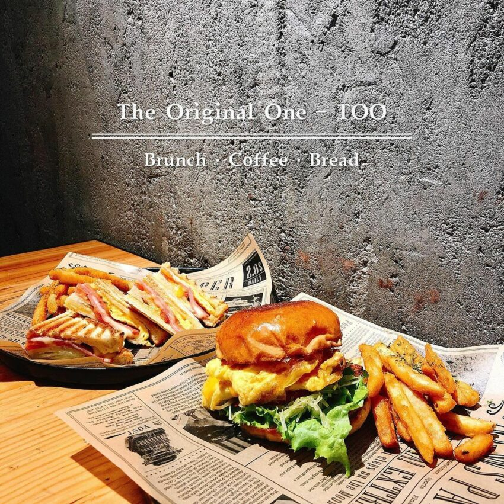

The Original One-TOO是一家烘焙起家的早午餐店，
菜單選擇很多，有帕尼尼、漢堡、歐姆蛋、義大利麵等，除了早午餐外，擺放在櫃台琳琅滿目的麵包種類更是吸睛
主餐只要加80元就能升級套餐，多了沙拉、濃湯和麵包，重點是麵包還可以無限續
而且美味度完全不輸主餐，讓人吃完還想外帶麵包回家！
地址：高雄市前鎮區瑞隆路138號
營業時間：09:00–19:00 (週二休息)

高雄美食介紹 高雄美食｜美食小吃 高雄美食｜下午茶、咖啡廳 高雄美食｜消夜、宵夜 期末心得
練習用音樂、影片
your drowser does not support the audio element.